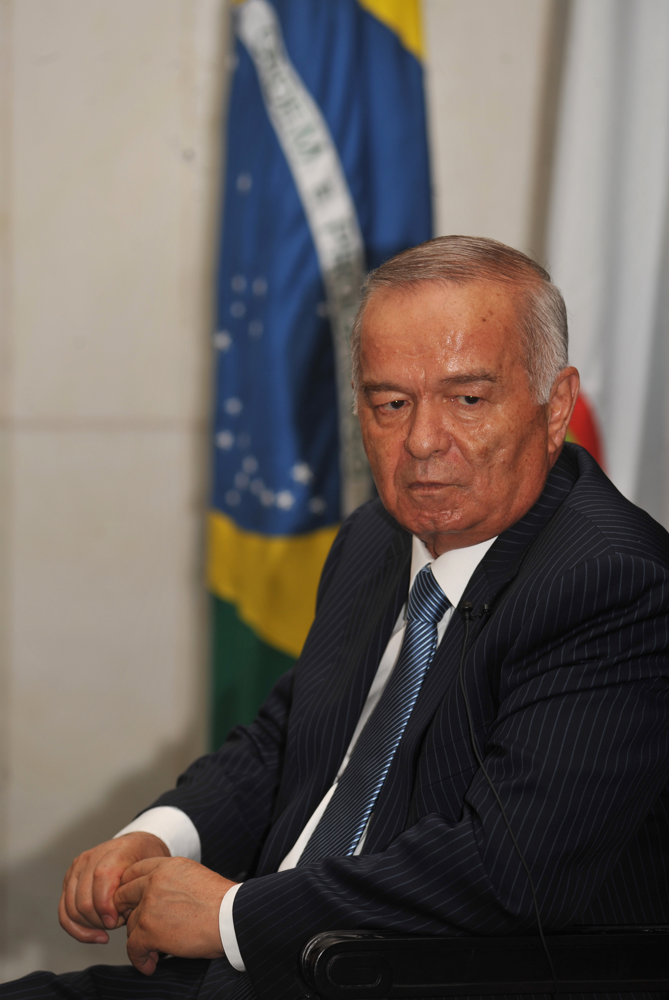

The referendum of 26 March 1995: Islam Karimov's presidential term extended to 2000
On 26 March 1995 a referendum was held in Uzbekistan that extended President Islam Karimov's term — to which he had been elected in 1991 — until 2000, postponing the next presidential election. According to official results, 99.6% of those who voted said "yes." This is a sourced historical explainer only.

On 26 March 1995 a nationwide referendum was held in Uzbekistan. The question put to voters concerned extending the term of President Islam Karimov: the proposal was to extend the term to which he had been elected in 1991 until 2000. This postponed the next presidential election that would otherwise have been due. Only sourced facts are set out below.
The historical setting
Islam Karimov had been elected head of state in Uzbekistan's first nationwide presidential election on 29 December 1991. In December 1994 the country held its first elections to the Oliy Majlis, and the new parliament began work in February 1995. The 1995 referendum was called on the initiative of that Oliy Majlis.
The official results
According to the official data of the Central Election Commission, the referendum recorded 11,199,415 "yes" votes (99.64%) and 40,617 "no" votes (0.36%). Turnout was 99.34% (11,245,028 votes in total). The proposal was thus approved by about 99.6% of those who voted.

International assessments
The referendum drew international criticism. The United States criticised it for a "lack of public debate" and noted instances in which one person cast votes on behalf of their whole family. Observers noted that only those wishing to vote "no" entered a separate booth, while those voting "yes" placed an unmarked ballot directly into the box.
What followed
The 1995 referendum was part of the consolidation of presidential power in the 1990s. Karimov had initially interpreted the referendum as re-election for a second term, saying he would leave office in 2000; but after the legislature passed a resolution opposing that interpretation, he announced that he would stand in the 2000 election. He won the elections of 2000 and 2007 and remained head of state until his death in 2016.
In sum: the referendum of 26 March 1995 extended Islam Karimov's presidential term to 2000 and postponed the next election; by official results it was approved almost unanimously, but international observers criticised the process. The dates and figures in this explainer rest on the cited sources.